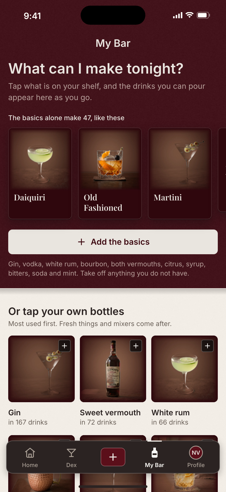
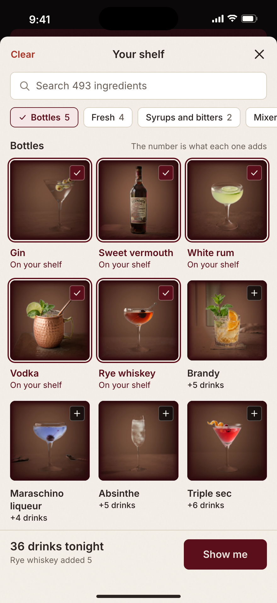
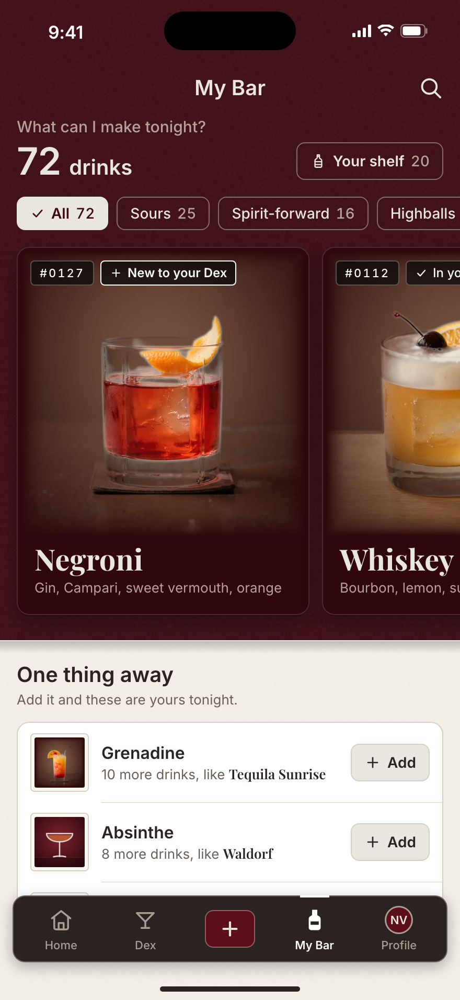
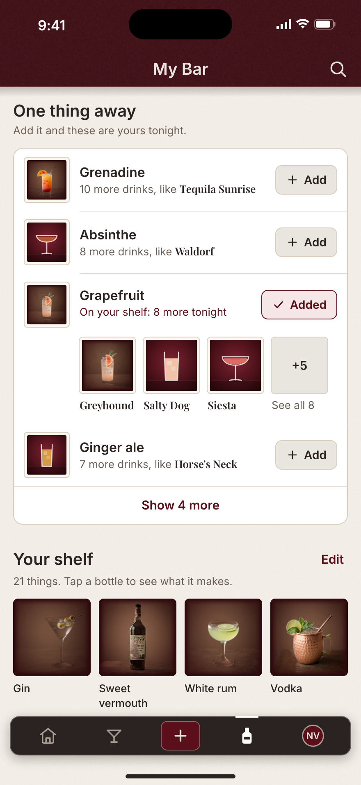

My Bar, task-first: it opens on what you can pour, and stocking it is a photo picker. iPhone 17 Pro Max, 440 x 956 pt. Every count is computed from barIndex.json.

1 · First openThe question, one-tap basics (47 drinks), bottles as tiles

2 · Stocking the shelfEach bottle says what it adds; the count is live

3 · Tonight, stocked72 drinks as lit cards; one thing away, one tap each

4 · One tap laterGrapefruit added: 8 more, shown where you tapped